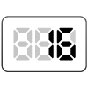

【016】関数を使った計算結果をコンソールに表示

- プロンプト例
JavaScriptで関数を使った完全未経験者向けの問題を５問作成して -出力は、consoleに
この時点では、関数は「function」を利用します。
関数を使った練習問題
問題1：あいさつを表示する関数
「こんにちは！」と表示する関数 を作って、実行してください。
仕様
- 関数名：sayHello
- 出力：こんにちは！
出力例
こんにちは！
問題2：名前を表示する関数
引数で受け取った名前を表示する関数 を作ってください。
仕様
- 関数名：printName
- 引数：name
- 出力：「私の名前は〇〇です」
実行例
printName(`たろう`);
出力例
私の名前はたろうです
問題3：2つの数字を足し算する関数
2つの数を受け取って、合計を表示する関数 を作ってください。
仕様
- 関数名：add
- 引数：a, b
- 出力：計算結果
実行例
add(3, 5);
出力例
8
問題4：数字を2倍にする関数
数字を1つ受け取り、2倍した結果を表示する関数 を作ってください。
仕様
- 関数名：double
- 引数：num
実行例
double(7);
出力例
14
問題5：偶数か奇数か判定する関数
数字を受け取り、偶数か奇数かを判定して表示する関数 を作ってください。
仕様
- 関数名：checkEvenOdd
- 引数：num
- 偶数 →「偶数です」
- 奇数 →「奇数です」
実行例
checkEvenOdd(4); checkEvenOdd(7);
出力例
偶数です 奇数です
✅ 解答例
// 問題1：あいさつを表示する関数 function sayHello() { console.log("こんにちは！"); } sayHello(); // 問題2：名前を表示する関数 function printName(name) { console.log("私の名前は" + name + "です"); } printName("たろう"); // 問題3：2つの数字を足し算する関数 function add(a, b) { console.log(a + b); } add(3, 5); // 問題4：数字を2倍にする関数 function double(num) { console.log(num * 2); } double(7); // 問題5：偶数か奇数か判定する関数 function checkEvenOdd(num) { if (num % 2 === 0) { console.log("偶数です"); } else { console.log("奇数です"); } } checkEvenOdd(4); checkEvenOdd(7);